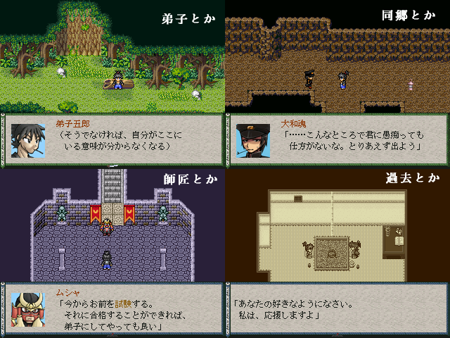

 |
|
| 作者：六徳 | |
| ジャンル：見るゲ | |
| ツクール：RPGツクール2000 | |
| 作者コメント： 師匠とその好敵手、偶然出会った同郷の男、そして家族。 様々な人との関わりの中、やがて彼は意外な真実を知ることとなる。 その日も、美しい満月の夜だった。 シリアスそうでシリアスじゃないちょっとだけシリアスなゆるい見るゲの予定です。 色々いますが主人公は弟子五郎のはずです。たぶん。 |
|
| 管理人コメント： しっとりとした見るゲはよいものです。 |
|
| ダウンロード(1.08MB_0505更新) / 感想掲示板 |
|
| 前の作品 / 次の作品 / TOPへ戻る | |